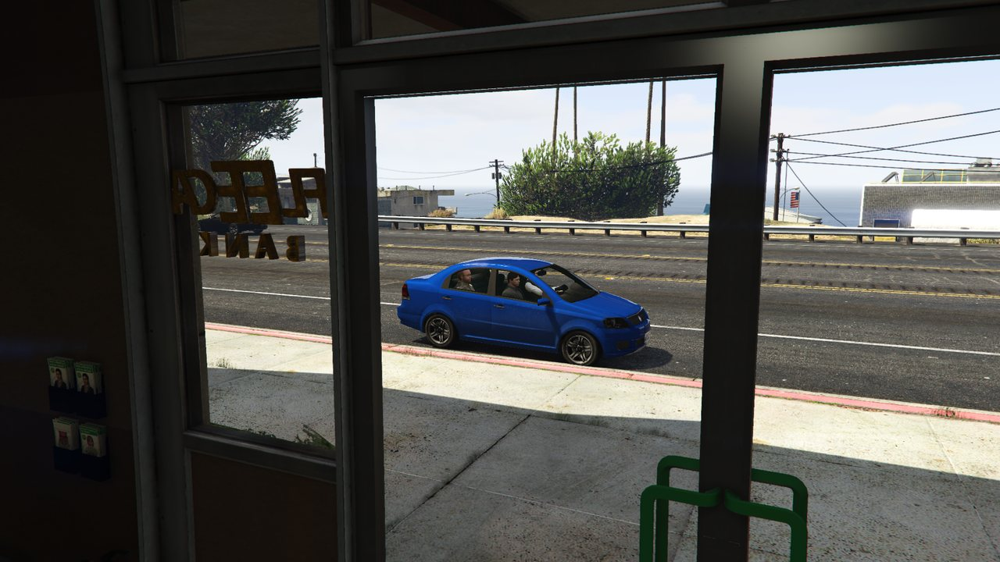
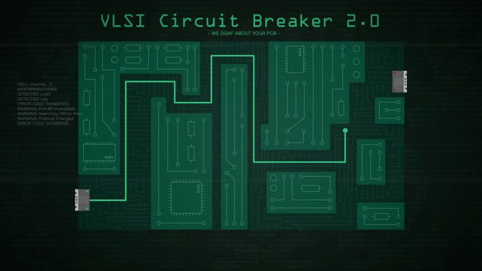

Scope Out
Vigilancia del banco. El equipo recoge a Lester, estudia la sucursal de Fleeca en Banham Canyon, practica el hackeo y se lleva el equipo de Paige a casa.

«Vamos a ver el banco, echar un vistazo, recoger algo de equipo y volver para preparar el plan. No es nada complicado.»
Descripción
Lester se pone en contacto con el equipo y les cita en la sala de planificación de un apartamento de lujo. Allí explica el objetivo: asaltar una franquicia de Fleeca situada en la Great Ocean Highway, en Banham Canyon. Antes de dar el golpe hay que reconocer el terreno y conseguir el material necesario.
El equipo se sube al Asea de Lester y conduce hasta la sucursal para observar la seguridad, la distribución y los accesos. De vuelta a la fábrica de ropa de Darnell Bros., el pasajero aprovecha el trayecto para practicar el minijuego de hackeo VLSI Circuit Breaker 2.0, el mismo que usará el taladrador durante el golpe final.
En la fábrica, Paige Harris espera junto a un Granger cargado con el equipo del golpe. El equipo deja el Asea, sube al Granger y lo entrega en el garaje del apartamento del líder para completar la preparatoria.

Desarrollo de la misión
- Entra en la sala de planificación del apartamento para iniciar la preparatoria.
- Sube al coche de Lester y conduce hasta la sucursal de Fleeca en Banham Canyon.
- Observa el banco desde el exterior mientras Lester revisa las cámaras de seguridad.
- Pon rumbo a la fábrica de Darnell Bros. y completa el minijuego de hackeo durante el trayecto.
- Recoge el Granger de Paige y entrégalo en el garaje del apartamento del líder.
Roles
Conductor
Asea · Granger- Lleva a Lester al banco y de vuelta a la fábrica.
- Conduce con cuidado: Lester y Paige no pueden morir.
- Recoge el Granger y entrégalo en el garaje.
Pasajero
Hackeo- Completa los 3 niveles del minijuego de hackeo.
- Practica el trazado: lo repetirás en el golpe final.
- Si fallas, el punto se ralentiza pero baja la puntuación.
Requisitos
- Haber desbloqueado el Fleeca visitando a Lester Crest.
- Disponer de un apartamento de lujo con sala de planificación.
- Equipo de 2 jugadores.
- Ser el líder del golpe o aceptar la invitación del líder.
Objetivos
- Sube al coche de Lester.
- Lleva a Lester a la sucursal de Fleeca.
- Lleva a Lester a su fábrica.
- Sube al Granger de Paige.
- Entrega el Granger en el garaje del apartamento.
Consejos
- El pasajero debería completar el hackeo: es la mejor práctica para el golpe final.
- No alertes a la policía. Si llamas la atención, la misión falla.
- Conduce sin golpes bruscos; Lester y Paige deben llegar vivos.
- Aprovecha el trayecto largo para memorizar el recorrido del minijuego.
- Al llegar a la fábrica, cambia de vehículo y sigue el GPS hasta el garaje.
Condiciones de fallo
- Que uno de los jugadores muera.
- Atraer la atención de la policía.
- Que Lester o Paige resulten eliminados.
- Que un jugador abandone la misión.
Fuente: GTA Wiki. Capturas: GTA Wiki / Rockstar Games. Los pagos pueden variar según dificultad y bonificaciones semanales.